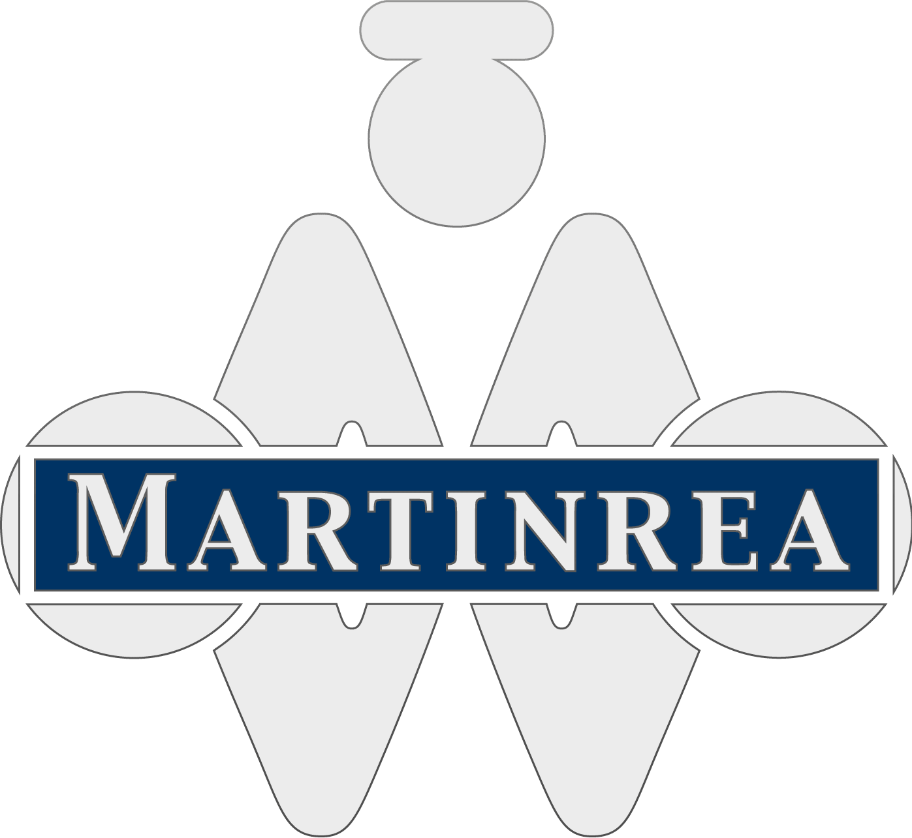

Martinrea International
Manufacturing Engineering Intern
Overview
As a manufactuing engineer I worked on production-equipment and process-improvement projects for automotive manufacturing, designing and improving stations, tooling, and mechanisms to increase throughput, improve reliability, and simplify production.
01 Station Combination
Consolidating two front-rail manufacturing operations into a single station.
Project Summary
Left-hand and right-hand Jeep Cherokee front rails passed through two separate substations before entering the main manufacturing line: one for bracket attachment and another for pipe-nut welding. The opportunity was to combine both operations into a single station, reducing the equipment, labor, and floor space required by the process
My Contribution
I redesigned the station around the combined manufacturing process, working with BTM to develop custom clinching presses that replaced the existing bracket-attachment equipment. I designed the equipment integration and guarding, developed a locating system to accommodate both left-hand and right-hand rails, and implemented sensors to verify bracket presence before processing. The redesign required balancing equipment packaging, operator access, safety, and process requirements while ensuring both operations could run within the same production cell.

$225K
Annual Savings
450 sq ft
Floor Space Freed
1
Operator Eliminated
$40K
Robot Freed for Reuse
02 Ejector Method Redesign
Improving the reliability, maintainability, and throughput of a recurring production mechanism.
Project Summary
The existing ejector mechanism was used across multiple substations to move completed parts out of the process. Repeated cycling caused instability and wear at the pivot, making the mechanism difficult to maintain and contributing to electrode damage and recurring production downtime.
My Contribution
I evaluated the existing mechanism to understand where the instability and wear were coming from, then redesigned the pivot and motion-support system to make it more robust for repeated production use. I replaced the existing pivot arrangement with bearings and shoulder bolts to create a more stable, serviceable rotational interface, and added a gas strut to support the moving assembly, reduce the load carried by the pneumatic cylinder, and prevent the tray from dropping uncontrollably into the electrodes. The redesigned mechanism was implemented across nine substations, improving reliability while reducing recurring downtime and increasing production throughput.

Design completed during my internship; factory implementation followed afterward.
45%
JPH Increase
9
Substations Improved
Downtime
Reduced
03 Station Redesign
Reducing operator movement and cycle time through cell-layout redesign.
Project Summary
The existing process required the operator to enter the cell twice per cycle: once to bolt the rail and again to position the part for welding. This created unnecessary operator movement and added cycle time. I redesigned the station around a single-entry workflow so both operations could be completed during the same cell entry.
My Contribution
I redesigned the cell layout to create a new operator pathway while maintaining the safety and functionality of the existing automated equipment. I developed the updated guarding and light-curtain layout around the expanded access area, then used weld-robot simulations to verify clearance and ensure the new layout would not interfere with robot motion or welding operations.

Design completed during my internship; factory implementation followed afterward.
40%
JPH Increase
17.1 s
Cycle Time Reduction
Operator Flow
Simplified
04 Key Takeaways
Design Around the Operator
Station design is not only about fitting equipment into a cell. Operator access, movement, ergonomics, safety, and task sequence directly influence cycle time and throughput
Robustness Matters as Much as Function
A mechanism can function correctly and still be a poor production solution. Reliability, maintainability, wear, repeatability, and failure modes all matter when equipment must perform continuously
SMALL CHANGES CAN DRIVE SYSTEM-LEVEL IMPACT
Combining stations and redesigning process flow showed me how localized fixture and equipment changes can reduce labor, floor space, energy use, and overall manufacturing cost.
Methods & Tools
SOLIDWORKS · Fixture Design · Station Design · Automation · Design for Six Sigma · Robot Simulation · Guarding & Safety · Sensors · Pneumatics · Process Optimization